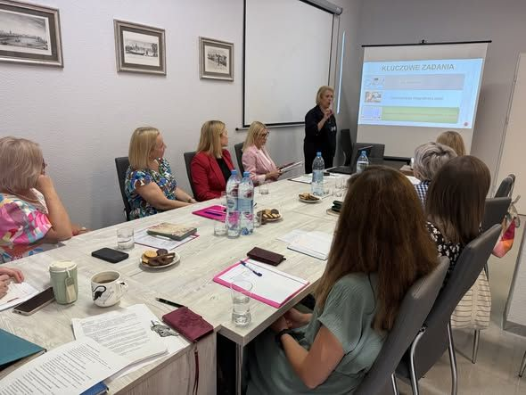
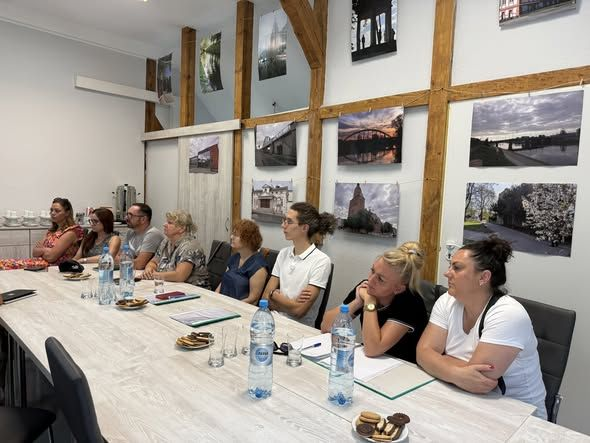
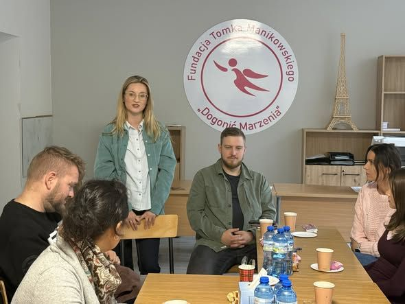
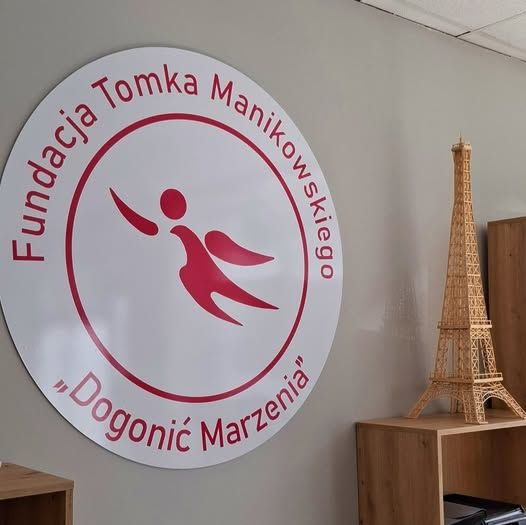
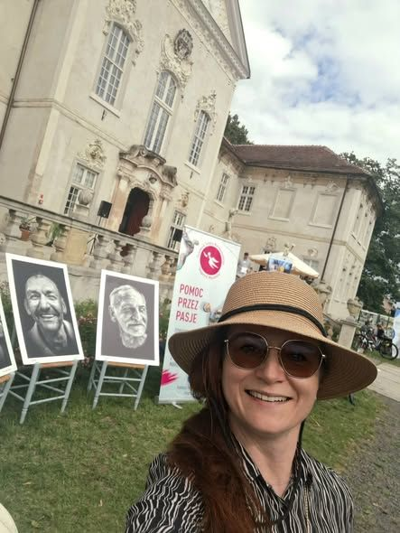
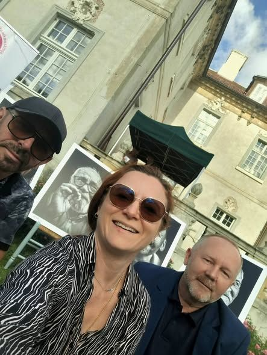
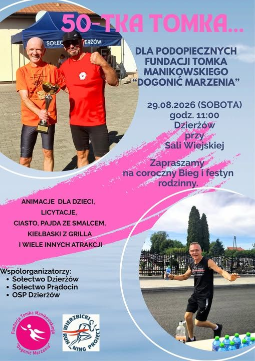

Powstaje Gorzowskie Centrum Wolontariatu
Byliśmy na pierwszym spotkaniu z CUS, Miastem i organizacjami. Centrum połączy osoby gotowe pomagać z miejscami, które tej pomocy potrzebują.
Gorzów Wielkopolski, ul. Sikorskiego 99
Towarzyszymy w drodze do lepszego życia, wolności i zdrowia. Pomagamy osobom w kryzysie bezdomności i uzależnienia wrócić do samodzielnego życia: od pierwszej rozmowy na ulicy, przez terapię, po mieszkanie i pracę.

Fundację założył w 2018 roku Tomasz Manikowski, gorzowski streetworker i maratończyk, który od lat pomaga ludziom na życiowych zakrętach.
Nazwa nawiązuje do jego biegów charytatywnych: w 2010 roku obiegł Irlandię w akcji „Dogonić Marzenia - Mimo wszystko” razem z Fundacją Anny Dymnej. Pracujemy z osobami w kryzysie bezdomności, uzależnionymi, z niepełnosprawnościami oraz z samotnymi mamami.
„Pokażemy im, że za tym zakrętem jest szansa na zupełnie nowe i lepsze życie.”
Tomasz Manikowski o Domu na Zakręcie
Trzy działania, które ruszyły w 2026 roku razem z Miastem i Centrum Usług Społecznych w Gorzowie.
Dla młodych w wieku 14-24 lata, od środy do piątku w godz. 17.00-19.00. Zajęcia profilaktyczne, spotkania z psychologiem i warsztaty artystyczne z Andrzejem Moskalukiem.
Asystent towarzyszy osobie w kryzysie bezdomności w załatwianiu spraw i wychodzeniu na prostą.
Dla 65 mieszkańców bez pracy: indywidualna ścieżka wsparcia, psycholog, doradca zawodowy i nowe kwalifikacje. Chcesz wziąć udział? Napisz lub zadzwoń.



Projekt „Przez aktywizację społeczną i zawodową do samodzielności” jest współfinansowany z EFS+ w ramach programu Fundusze Europejskie dla Lubuskiego 2021-2027. Klub i usługa asystenta są realizowane w ramach projektu „CUS Gorzów blisko ludzi” (EFS+, FEL 2021-2027) oraz z budżetu Miasta Gorzowa Wielkopolskiego.

Więcej informacji i zdjęć na profilu fundacji na Facebooku.
Byliśmy na pierwszym spotkaniu z CUS, Miastem i organizacjami. Centrum połączy osoby gotowe pomagać z miejscami, które tej pomocy potrzebują.

Na zaproszenie ROPS pokazaliśmy naszą pracę na pikniku w Bojadłach, jako jedyna organizacja z Gorzowa. Zdjęcia: Łukasz Klimek.

Coroczny bieg i rodzinny festyn w Dzierżowie: 60. urodziny Tomka i 10 lat nowego życia Krzyśka. Dziękujemy, że byliście z nami.
Zapraszamy 65 mieszkańców, którzy chcą wrócić na rynek pracy.
Od środy do piątku w godz. 17.00-19.00, ul. Sikorskiego 99.
Gazeta Lubuska o spadku liczby osób w kryzysie bezdomności w mieście.
Darowizna pomaga prowadzić mieszkania treningowe i towarzyszyć podopiecznym w drodze do samodzielności. Można też pomóc rzeczowo albo jako wolontariusz.
Statut, sprawozdania finansowe i merytoryczne oraz polityki fundacji w jednym miejscu.
Przejdź do dokumentówNajprościej zadzwonić: 506 141 734 albo 513 730 546. Jeśli znasz osobę w kryzysie bezdomności, która potrzebuje pomocy, daj nam znać.